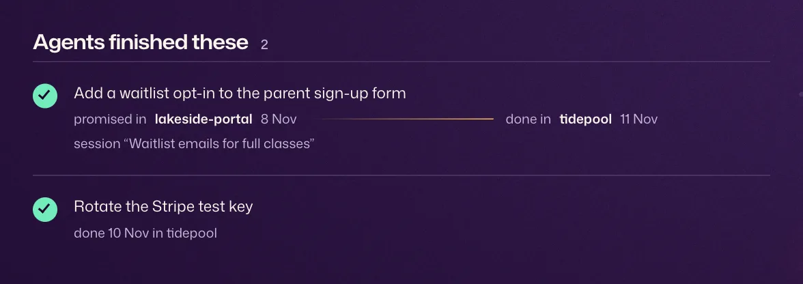

One promise, two repos
Monday, in website
You promise your agent the pricing page. Wake writes a to-do.
Add the pricing page
Wednesday, in checkout
You open a session in another repo. It already sees that to-do.
Add the pricing page
Done
That session ships it, and Wake ticks it off with a receipt.
Add the pricing page
Done: add the pricing page promised Mon in website → done Wed in checkout, session “Pricing page”
